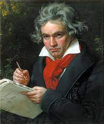
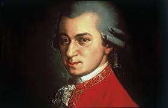
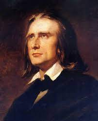
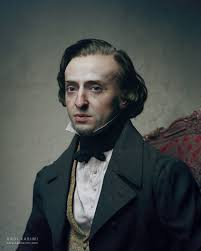
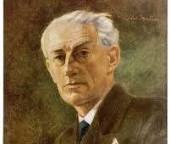
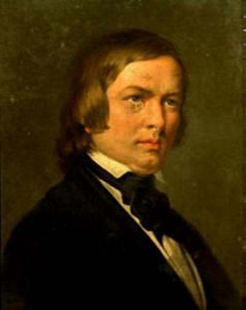
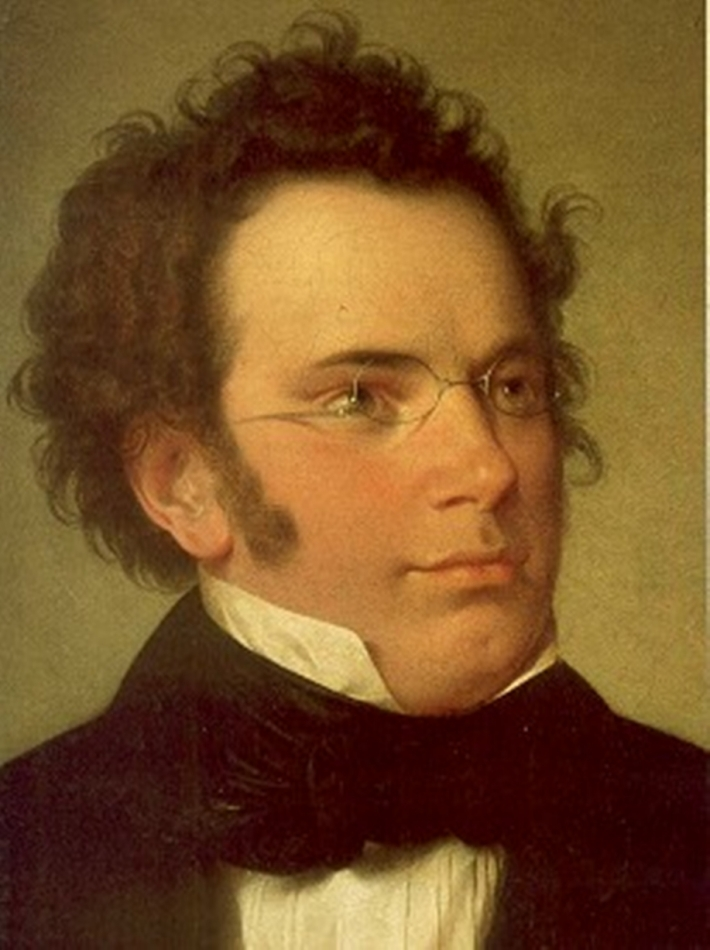
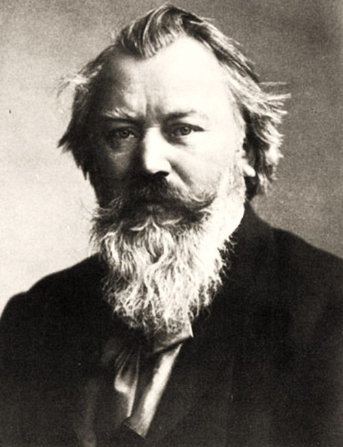
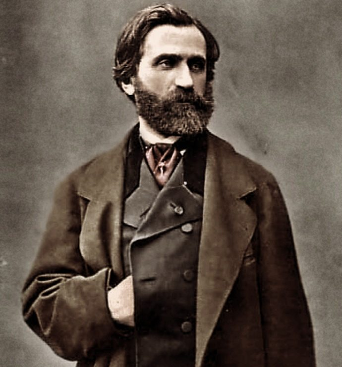
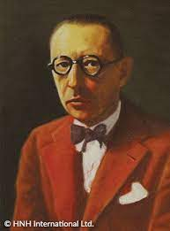

Ludwig van Beethoven was a German composer and pianist. He is widely regarded as one of the greatest composers in the history of Western classical music, and his compositions are among the most performed of all time. Some of his most famous works include the Ninth Symphony, Moonlight Sonata, and Für Elise. Despite losing his hearing in later life, he continued to compose some of his greatest works. Beethoven died in 1827 at the age of 56.
Symphony No 9:1
Symphony No 9:2
Symphony No 9:3
Symphony No 9:4
Moonlight Sonata 1
Moonlight Sonata 2
Johann Sebastian Bach
Johann Sebastian Bach (1685-1750) was a German composer and musician of the Baroque era. He is considered one of the greatest composers of all time and is revered for his keyboard music, choral works, and orchestral compositions such as the "Brandenburg Concertos," "The Goldberg Variations," "Mass in B Minor," and "St. Matthew Passion." He is regarded as a master of counterpoint and harmony and his works have had a profound influence on Western classical music.
Toccata No 1 in F# Minor
Toccata No 2 in C Minor
Toccata No 3 in D Major
Toccata No 4 in D Minor
Wolfgang Amadeus Mozart
Wolfgang Amadeus Mozart (1756-1791) was one of the most influential, popular and prolific composers of the classical period. He composed over 600 works, including some of the most famous and loved pieces of symphonic, chamber, operatic, and choral music. Mozart was born in Salzburg to a musical family.
Symphony No 25
Symphony No 28
Marriage of Figaro
Sonatas for two Pianos
Franz Liszt
Franz Liszt was the greatest piano virtuoso of his time. He was the first to give complete solo recitals as a pianist. He was a composer of enormous originality, extending harmonic language and anticipating the atonal music of the 20th century. He invented the symphonic poem for orchestra. Some of his most famous works include La Campanella, Hungarian Rhapsody No.2, Piano Sonata in B minor.
Piano Concerto No 1
Trancendental Etude No 10
Rhapsody No 2
Rhapsody No 12
Frederic Chopin
Chopin is one of the most influential and popular composers of piano music of the 19th century. In Poland he is regarded as the person who has had most influence on the country's history of music. Chopin composed almost exclusively for piano solo and has been called the pianists' composer. Chopin was an expert in the art of writing and playing , and you won't find more charming melodies than those of the Nocturnes in B flat minor and E flat, largely considered Chopin's most famous, from his Nocturnes Op. 9.
Second Sonata in B flat minor
Ballede
Barcarolle
Opus 24 No 1 in G Minor
Maurice Ravel
Joseph Maurice Ravel (7 March 1875 – 28 December 1937) was a French composer, pianist and conductor. Ravel was one of the most complex of all composers. Ravel is probably most famous for his Boléro, which was used by skaters Torvill and Dean as the piece of music for their gold-medal winning ice dance at the Olympic Games in 1984.
Don Quichotte a Dulcinee.
Bolero
Robert Schumann
Robert Schumann is another exceptional romantic composer, born on June 8, 1810, and marked the musical history of the early 19th century. Critics consider him a genius, being a master of all genres of classical music. Among the most important compositions for piano are Papillon, Toccata, Carnival, but along with these, Schumann composed music for choir, chamber music, religious music, operas and concerts.
Symphony No 4-1
Symphony No 4-2
Symphony No 4-3
Symphony No 4-4
Symphony No 4-5
Franz Schubert
Franz Schubert (1797-1828) was a 19th-century Austrian music composer and key figure in bridging the Classical and Romantic periods. He is noted for the melody and harmony in his songs and chamber music. He also produced several symphonies, masses, and piano works.His most notable works included Erlkönig, written in 1815
Impromptu Opus 90 No2
Impromptu Opus 90 No3
Seranade
Fantasy Opus 103
Gretchen am Spinrade
Johannes Brahms
Johannes Brahms was a German composer and pianist who wrote symphonies, concerti, chamber music, piano works, and choral compositions. Widely considered one the 19th century's greatest composers and one of the leading musicians of the Romantic era, Johannes Brahms was born May 7, 1833, in Hamburg, Germany.
Hungarian Dance No 3
Hungarian Dance No 6
Hungarian Dance No 7
Giuseppe Verdi
Verdi (10.10.1813-27.01.1901) was the major Italian musical dramatist of the nineteenth century, the successor to Bellini, Donizetti and Rossini. Along with Wagner, he was the most important opera composer of the period and received national and international recognition for his powerful stage works..
La Traviata
La donna e mobile
Aida
Igor Stravinsky
Igor Stravinsky (1882-1971) was a Russian composer who revolutionised 20th-century music, and provoked riots with The Rite of Spring. Stravinsky composed masterpieces in almost every genre, most notably an incomparable series of ballet scores. The most important piece is the Firebird(1910)
 Johann Sebastian Bach (1685-1750) was a German composer and musician of the Baroque era. He is considered one of the greatest composers of all time and is revered for his keyboard music, choral works, and orchestral compositions such as the "Brandenburg Concertos," "The Goldberg Variations," "Mass in B Minor," and "St. Matthew Passion." He is regarded as a master of counterpoint and harmony and his works have had a profound influence on Western classical music.
Johann Sebastian Bach (1685-1750) was a German composer and musician of the Baroque era. He is considered one of the greatest composers of all time and is revered for his keyboard music, choral works, and orchestral compositions such as the "Brandenburg Concertos," "The Goldberg Variations," "Mass in B Minor," and "St. Matthew Passion." He is regarded as a master of counterpoint and harmony and his works have had a profound influence on Western classical music.